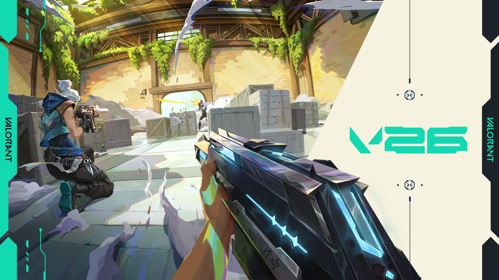

Versión 12.08 de VALORANT
Publicado por Riot Games · 28 de abril de 2026
Riot Games ha publicado las notas de la versión 12.08 de VALORANT, una actualización centrada en nuevos modos de juego, cambios en la rotación de mapas, el regreso de Premier y varias correcciones de errores.
La novedad principal es Escaramuza: Ascensión, una experiencia clasificatoria temporal diseñada para partidas rápidas y competitivas. Este modo busca poner el foco en la precisión, los duelos directos y la toma de decisiones en situaciones reducidas.
Escaramuza: Ascensión se puede jugar en formato 1 contra 1 y 2 contra 2. A diferencia de las partidas normales, no hay economía tradicional. Las armas cambian por fases: las primeras rondas se juegan con pistolas, después llegan rifles de bajo nivel y, más adelante, aparecen armas como Vandal y Phantom.
Los jugadores pueden elegir entre 14 agentes, pero cada uno dispone únicamente de una habilidad. Esto cambia bastante el ritmo de la partida, ya que reduce la cantidad de habilidades disponibles y obliga a usar mejor cada recurso.
El modo también cuenta con una clasificación propia dentro de FTW. Las colas de 1v1 y 2v2 se controlan de forma independiente, por lo que el progreso en cada formato se mide por separado. Los rangos van desde Hierro hasta Radiante.
Además, Riot ha incluido recompensas por participar en Escaramuza: Ascensión. Los jugadores pueden conseguir tarjetas de jugador al completar partidas y títulos especiales dependiendo de la clasificación más alta que alcancen.
En cuanto a mapas, Ascent vuelve a la cola competitiva y a Combate a muerte, mientras que Bind sale de estas rotaciones. Este tipo de cambios mantiene fresca la experiencia competitiva y obliga a los jugadores a adaptarse a diferentes escenarios.
Para los jugadores de PC, Premier también vuelve en esta versión. Riot confirma una nueva fase con calendario competitivo, semanas de partidas y playoffs divididos en varios días.
La actualización también incluye varias correcciones de errores relacionadas con agentes y habilidades. Entre ellas hay ajustes para Viper, Sage, Tejo, Gekko, Yoru, KAY/O y otros personajes. También se corrigen problemas de audio, repeticiones y ciertos errores específicos de consola.
En resumen, la versión 12.08 es una actualización bastante completa. No solo introduce un nuevo modo competitivo experimental, sino que también ajusta la rotación de mapas, recupera Premier y mejora varios problemas técnicos del juego.
Ver fuente oficial